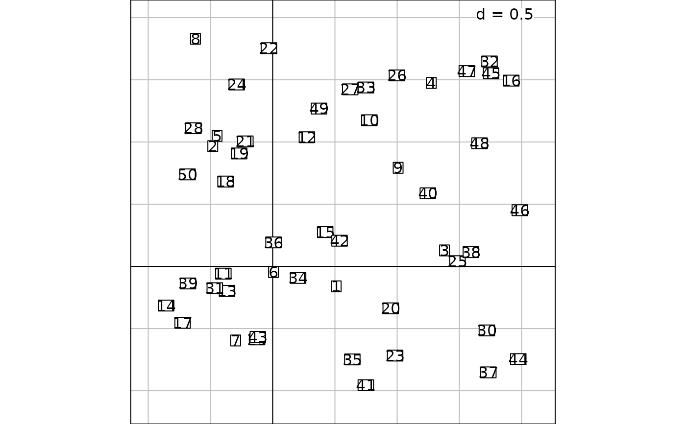

Handling ADEg graphical parameters
adegpar.Rdadegpar can be used to set or query graphical parameters used in ADEg object display.
It is inspired by the par function of graphics package.
Details
The graphical parameters control apparency of the graphic.
Calls can be made using either a list of list (e.g. plabels = list(col = "red")) or a list grouping both keys with "." (e.g. plabels.col = "red").
Parameters are re-used if needed in all ADEg object.
If set globally, meaning using adegpar, all created objects afterwards will be affected.
Value
Several parameters are used to create complete plot and accessible through adegpar.
p1d:parameters for one-dimension graphic, object of class inherited from
"ADEg.S1"or"ADEg.C1"horizontal: a logical indicating if the plot is horizontalreverse: a logical indicating if the bottom of the plot is at the bottom (forhorizontalasTRUE) or at the left of the device (forhorizontalasFALSE). If FALSE, the graphical display bottom is at the top (forhorizontalasTRUE) or at the right of the device (forhorizontalasFALSE).rug: a list dedicated to tick marksdraw: a logical indicating if the rugs are drawntck: size of the rug (ticks) in proportion from the reference line and the origin of the device (0.5 by default)margin: where to draw the reference line (0.07 by default)line: a logical indicating if the reference line is drawn usingporiginarguments
parrows:arrows' parameters. see
panel.arrowsfor more informationangle: angle from the shaft of the arrow to the edge of the arrow headends: kind of arrows to be drawn. Can befirst,lastorbothlength: length of the edges of the arrow head
paxes:axis' parameters. Mostly inspired by
xyplotfunction oflatticepackageaspectratio: a character string to control physical aspect ratio of the graphic (drawing panel more specifically).isofor isometric scales,fillfor drawing as big as possible orxyfor banking ruledraw: a logical indicating if axis (tick marks and labels) are drawn around the graphicx: a list used for the creation of x-axis in thetrellisobject. Seexyplotfor more informationdraw: a logical indicating if x-axis (tick marks and labels) are drawn around the graphic
y: the same list as forxwithdrawparameters
pbackground:background's parameters
col: background colorbox: a logical indicating if a box is drawn surrounding the plot
pellipses:ellipses' drawing parameters
alpha: a value between 0 and 1 controlling ellipses' background transparencyaxes: a list dedicated to ellipses' axisdraw: a logical indicating whether ellipses' axis are drawncol: ellipses' axis colorlty: line type of ellipses' axislwd: line width of ellipses' axis
border: ellipses's border colorlty: line type of ellipses' borderlwd: line width of ellipses' bordercol: ellipses' background color
pgrid:grid's drawing parameters
draw: a logical indicating if grid is drawn in the backgroundcol: grid's line colorlty: line type of grid linelwd: line width of grid linenint: an integer indicating the number of grid intervals expectedtext: a list dedicated to grid legend textcex: text size of grid legendcol: text color of grid legendpos: a character string (topright,topleft,bottomleft,bottomright) or a vector of length 2 indicating text position of grid legend. If it is a vector, the default unit isnpc(normalized parent coordinates).
plabels:labels' drawing parameters
alpha: a value between 0 and 1 controlling label transparencycex: labels' text sizecol: labels' text colorsrt: labels' text orientation. It can behorizontal,verticalor an angle indication in degreesoptim: a logical indicating if an algorithm is used to avoid labels' overlapping or outside limitsboxes: label's boxes parametersdraw: a logical indicating if labels are framedalpha: a value between 0 and 1 controlling labels' boxes transparencyborder: boxes' border colorcol: boxes' background colorlty: line type of boxes' borderlwd: line width of boxes' border
plegend:legend's drawing parameters (used for object of class inherited from
T.valueandS2.value)drawKey: a logical indicating if the legend should be drawn. Legend can be provided by thekeyargument or is automatically generated for*.classand*.valuefunctionsdrawColorKey: a logical indicating if the color legend should be drawn (only for*.imagefunctions)size: size of the legend
plines:lines' drawing parameters
col: lines colorlty: lines typelwd: lines width
pnb:drawing parameters for neighbourhood graph
edge: edge's drawing parameterscol: edge colorlty: line type of edgelwd: line width of edge
node: node's drawing parameterspch: node's symbol typecex: node's symbol sizecol: node's symbol coloralpha: a value between 0 and 1 controlling node's symbol transparency
porigin:drawing parameters for origin's lines. See
panel.linesfor more informationdraw: a logical indicating if vertical and horizontal lines are drawn to indicate origininclude: a logical indicating if origin is included in the drawing limitsorigin: a two-length vector indicating origin coordinatesalpha: a value between 0 and 1 controlling origin's lines transparencycol: color of origin's lineslty: origin's line typelwd: origin's line width
ppalette:a function taking one integer in argument indicating the number of expecting colors (for example using
colorRampPalette)quanti:adegpar()$ppalette$quanti(n)returns n colors shaded grey to whitequali:adegpar()$ppalette$quali(n, name)returnsndifferentiated colors.nameargument is passed to thebrewer.palfunction of theRColorBrewerpackage and must beAccent,Dark2,Paired,Pastel1,Pastel2,Set1(the default value),Set2orSet3. Whennis equal to 2, values for 'white' and 'black' colors are returned and can be not quite visible on the display.
ppoints:points' drawing paameters
alpha: a value between 0 and 1 controlling points transparencycex: points sizecol: points colorpch: points typefill: points' background color (only for filled points type)
ppolygons:polygons' drawing parameters (used for example to draw convex hull for
S2.classor Gaussian curves forC1.gaussobjects). Seelpolygonfor more information.border: polygon's border colorcol: polygon's background colorlty: line type of polygon borderlwd: line width of polygon borderalpha: a value between 0 and 1 controlling polygons' background transparency
pSp:drawing parameters for spatial object
col: spatial object's background colorborder: spatial object's border colorlty: line type of spatial object borderlwd: line width of spatial object borderalpha: a value between 0 and 1 controlling spatial object transparency
psub:subtitle's drawing parameters
cex: text size of subtitlecol: text color of subtitleposition: a character string (topright,topleft,bottomleft,bottomright) or a vector of length 2 indicating text position of subtitle. If it is a vector, the default unit isnpc(normalized parent coordinates).text: the character string to display
ptable:for table graphic, object of class inherited from
ADEg.Tx: x-axis parameterssrt: text rotationpos: position of the axis. It can betoporbottom. Otherwise axis and labels' axis are not drawntck: ticks sizeadj: justification of labels
y: same asxlist, but for y-axisstr,tck,adjpos: position of the axis. It can beleftorright. Otherwise axis and labels' axis are not drawn
margin: margin surrounding the drawing panel. The numbers indicate thebottom,left,topandrightmargins. Results are obtained passingmarginto padding argument inlattice. Please seelayout.heightsandlayout.widthsparameters inlatticepackage for more information
Author
Alice Julien-Laferriere, Aurelie Siberchicot aurelie.siberchicot@univ-lyon1.fr and Stephane Dray
Examples
oldparamadeg <- adegpar()
X <- data.frame(x = runif(50, -1, 2), y = runif(50, -1, 2))
s.label(X)

names(adegpar())
#> [1] "p1d" "parrows" "paxes" "pbackground" "pellipses"
#> [6] "pgrid" "plabels" "plegend" "plines" "pnb"
#> [11] "porigin" "ppalette" "ppoints" "ppolygons" "pSp"
#> [16] "psub" "ptable"
adegpar("paxes.draw", "psub.cex")
#> $paxes
#> $paxes$draw
#> [1] FALSE
#>
#>
#> $psub
#> $psub$cex
#> [1] 1
#>
#>
adegpar()$pback$col
#> [1] "white"
adegpar("paxes.draw" = TRUE, "psu.ce" = 3, "pback.col" = "grey85")
s.label(X)
adegpar(oldparamadeg)